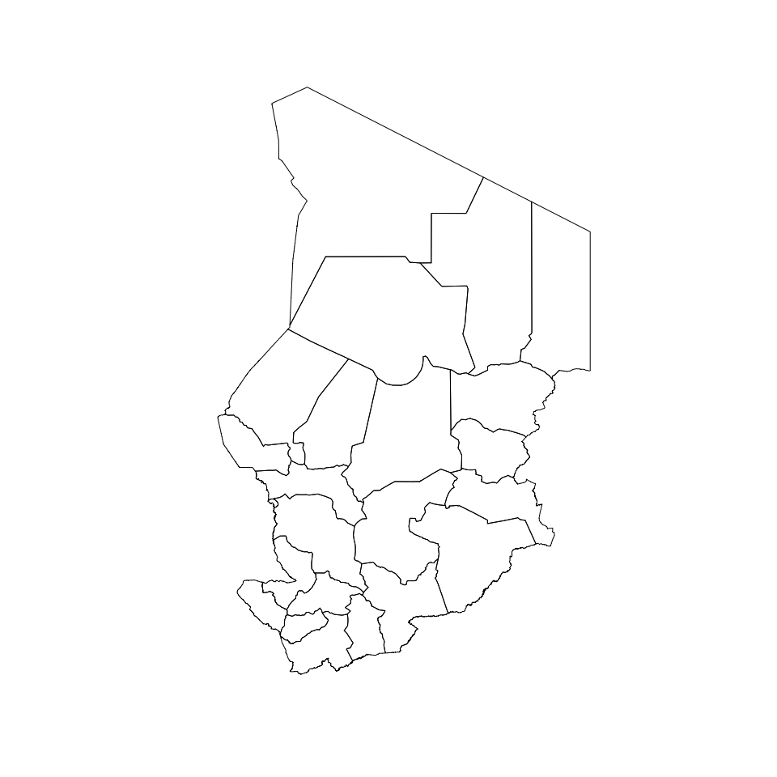
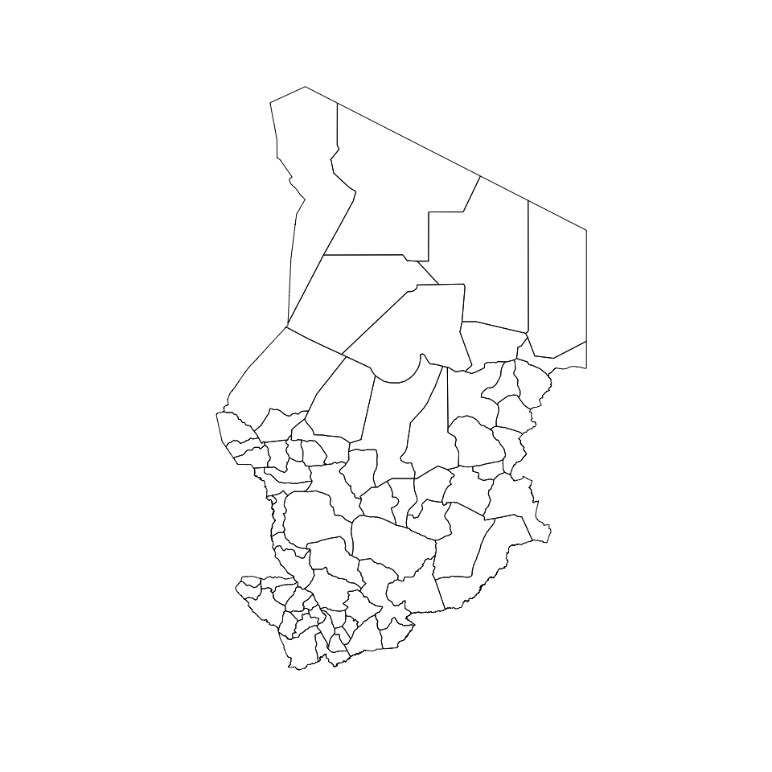
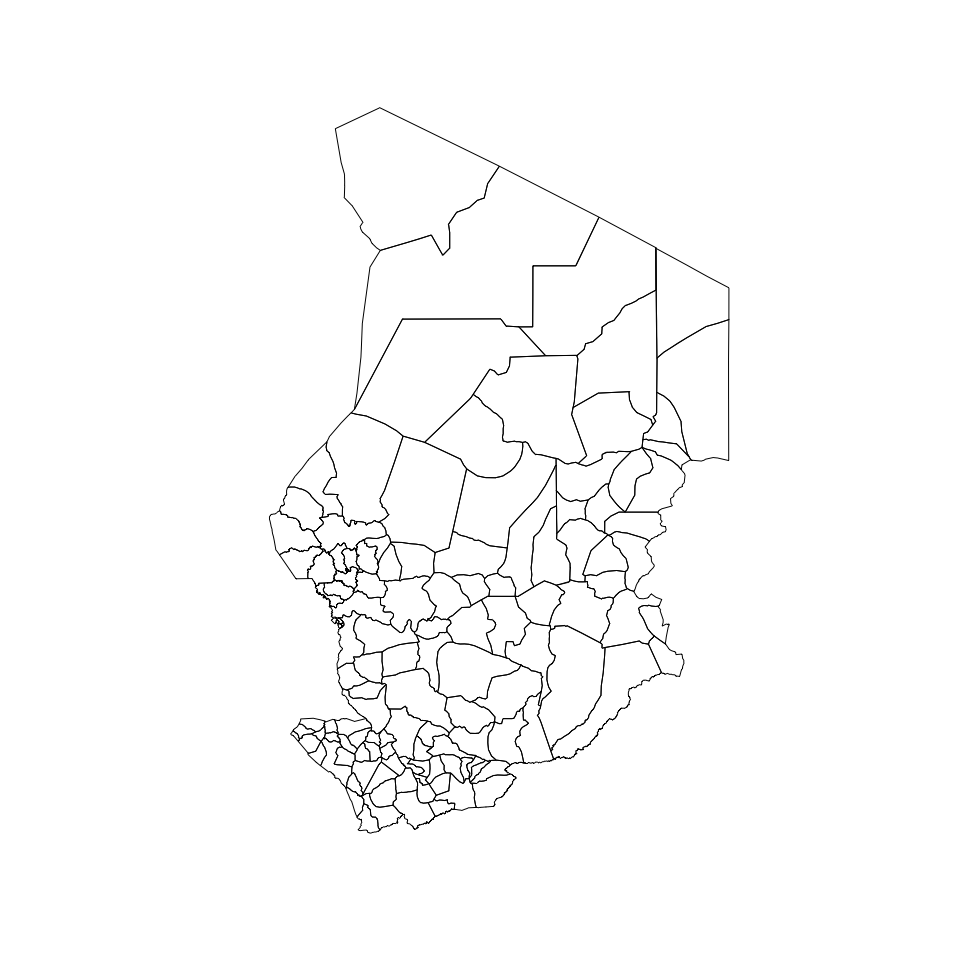
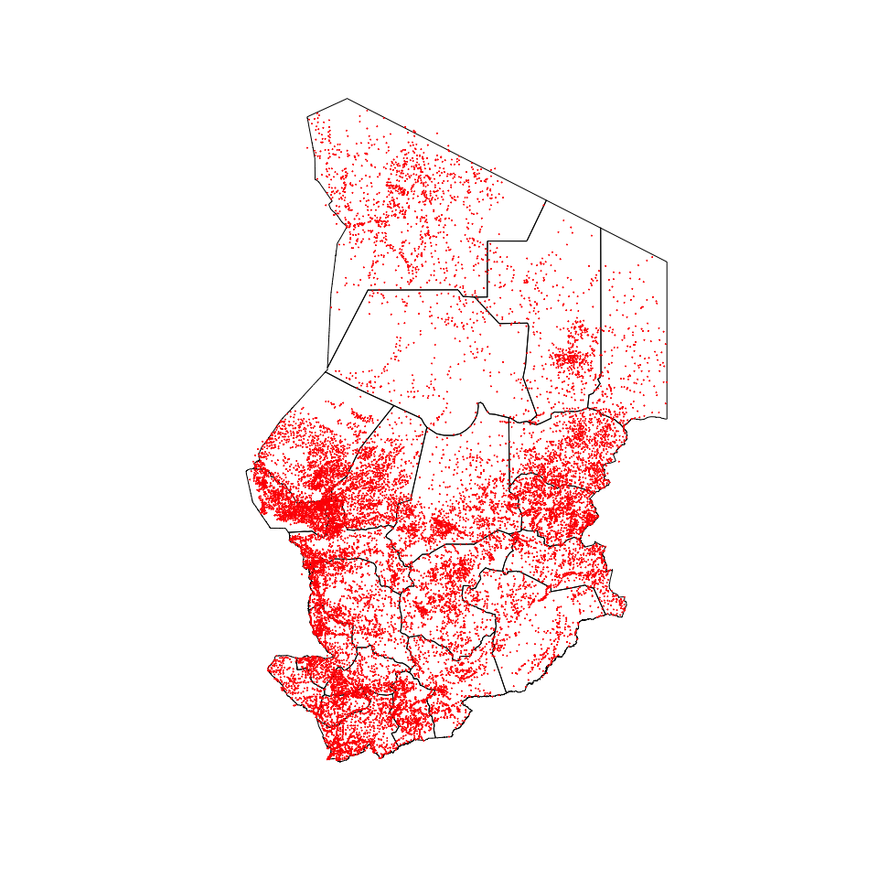

Designing surveys require relevant datasets to be used as basis for sample size calculations, sampling design, survey planning/logistics and survey implementation. These include datasets on population, lists of sampling clusters, map datasets for spatial sampling, and previous survey datasets that can be used for estimating indicator variance and design effects. This package contains relevant datasets for use in designing surveys in Chad.
Installation
The development version of the chad package can be installed from GitHub with:
if (!require(remotes)) install.packages("remotes")
remotes::install_github("spatialworks/chad")Usage
Region borders
The Chad region borders is accessed via the regions dataset.
chad::regions
#> Simple feature collection with 23 features and 13 fields
#> Geometry type: POLYGON
#> Dimension: XY
#> Bounding box: xmin: 13.47348 ymin: 7.44107 xmax: 24 ymax: 23.43944
#> Geodetic CRS: WGS 84
#> First 10 features:
#> admin1Name admin1Pcod admin1RefN admin1Na_1 admin1AltN
#> 1 Batha TD01 Batha BATHA <NA>
#> 2 Borkou TD02 Borkou BORKOU <NA>
#> 3 Chari-Baguirmi TD03 Chari-Baguirmi CHARI-BAGUIRMI <NA>
#> 4 Guéra TD04 Guera GUERA <NA>
#> 5 Hadjer-Lamis TD05 Hadjer-Lamis HADJER LAMIS <NA>
#> 6 Kanem TD06 Kanem KANEM <NA>
#> 7 Lac TD07 Lac LAC <NA>
#> 8 Logone Occidental TD08 Logone Occidental LOGONE OCCIDENTAL <NA>
#> 9 Logone Oriental TD09 Logone Oriental LOGONE ORIENTAL <NA>
#> 10 Mandoul TD10 Mandoul MANDOUL <NA>
#> admin1Al_1 admin0Name admin0Pcod date validOn validTo Shape_Leng
#> 1 <NA> Tchad TD 2016-03-15 2016-05-09 <NA> 12.859463
#> 2 <NA> Tchad TD 2016-03-15 2016-05-09 <NA> 15.334343
#> 3 <NA> Tchad TD 2016-03-15 2016-05-09 <NA> 10.282660
#> 4 <NA> Tchad TD 2016-03-15 2016-05-09 <NA> 12.081014
#> 5 <NA> Tchad TD 2016-03-15 2016-05-09 <NA> 9.789328
#> 6 <NA> Tchad TD 2016-03-15 2016-05-09 <NA> 11.907133
#> 7 <NA> Tchad TD 2016-03-15 2016-05-09 <NA> 6.471361
#> 8 <NA> Tchad TD 2016-03-15 2016-05-09 <NA> 3.928428
#> 9 <NA> Tchad TD 2016-03-15 2016-05-09 <NA> 8.194939
#> 10 <NA> Tchad TD 2016-03-15 2016-05-09 <NA> 5.997929
#> Shape_Area geometry
#> 1 7.6210426 POLYGON ((19.34077 16.10815...
#> 2 12.7404929 POLYGON ((18.89773 18.66806...
#> 3 3.8809073 POLYGON ((15.404 12.322, 15...
#> 4 5.0574038 POLYGON ((19.77772 13.03076...
#> 5 2.3981196 POLYGON ((15.755 13.163, 15...
#> 6 6.1209700 POLYGON ((17.17024 16.03506...
#> 7 1.8103005 POLYGON ((13.7291 14.51277,...
#> 8 0.7273342 POLYGON ((16.381 9.21, 16.4...
#> 9 1.9443169 POLYGON ((16.57123 9.151308...
#> 10 1.4335490 POLYGON ((17.507 9.616, 17....The regions borders of Chad can be plotted by:

Department borders
The Chad department borders is accessed via the departments dataset.
chad::departments
#> Simple feature collection with 70 features and 16 fields
#> Geometry type: POLYGON
#> Dimension: XY
#> Bounding box: xmin: 13.47348 ymin: 7.44107 xmax: 24 ymax: 23.43944
#> Geodetic CRS: WGS 84
#> First 10 features:
#> OBJECTID admin2Name admin2Pcod admin2RefN admin2Na_1 admin2AltN
#> 1 1 Batha Ouest TD0101 Batha Ouest BATHA OUEST <NA>
#> 2 2 Batha Est TD0102 Batha Est BATHA EST <NA>
#> 3 3 Fitri TD0103 Fitri FITRI <NA>
#> 4 4 Borkou TD0201 Borkou BORKOU <NA>
#> 5 5 Baguirmi TD0301 Baguirmi BAGUIRMI <NA>
#> 6 6 Chari TD0302 Chari CHARI <NA>
#> 7 7 Loug-Chari TD0303 Loug-Chari LOUG-CHARI <NA>
#> 8 8 Guéra TD0401 Guera GUERA <NA>
#> 9 9 Abtouyour TD0402 Abtouyour ABTOUYOUR <NA>
#> 10 10 Barh-Signaka TD0403 Barh-Signaka BARH-SIGNAKA <NA>
#> admin2Al_1 admin1Name admin1Pcod admin0Name admin0Pcod date
#> 1 <NA> Batha TD01 Tchad TD 2016-04-07
#> 2 <NA> Batha TD01 Tchad TD 2016-04-07
#> 3 <NA> Batha TD01 Tchad TD 2016-04-07
#> 4 <NA> Borkou TD02 Tchad TD 2016-04-07
#> 5 <NA> Chari-Baguirmi TD03 Tchad TD 2016-04-07
#> 6 <NA> Chari-Baguirmi TD03 Tchad TD 2016-04-07
#> 7 <NA> Chari-Baguirmi TD03 Tchad TD 2016-04-07
#> 8 <NA> Guéra TD04 Tchad TD 2016-04-07
#> 9 <NA> Guéra TD04 Tchad TD 2016-04-07
#> 10 <NA> Guéra TD04 Tchad TD 2016-04-07
#> validOn ValidTo Shape_Leng Shape_Area geometry
#> 1 2017-06-15 <NA> 11.667382 4.0913115 POLYGON ((19.34077 16.10815...
#> 2 2017-06-15 <NA> 8.078575 2.5555799 POLYGON ((20.043 15.742, 20...
#> 3 2017-06-15 <NA> 4.222495 0.9741512 POLYGON ((17.533 13.48, 17....
#> 4 2017-06-15 <NA> 11.240590 6.1392969 POLYGON ((20.54311 17.94151...
#> 5 2017-06-15 <NA> 7.131149 2.2501481 POLYGON ((16.45 12.305, 16....
#> 6 2017-06-15 <NA> 3.715286 0.3645872 POLYGON ((15.404 12.322, 15...
#> 7 2017-06-15 <NA> 5.364202 1.2661720 POLYGON ((17.033 11.065, 17...
#> 8 2017-06-15 <NA> 4.110334 0.6972816 POLYGON ((19.10299 12.69395...
#> 9 2017-06-15 <NA> 3.953830 0.7969211 POLYGON ((18.33026 12.61748...
#> 10 2017-06-15 <NA> 7.100539 2.6718339 POLYGON ((17.747 11.652, 17...The department borders of Chad can be plotted by:
plot(st_geometry(chad::departments))
District borders
The Chad district borders is accessed via the districts dataset.
chad::districts
#> Simple feature collection with 126 features and 4 fields
#> Geometry type: MULTIPOLYGON
#> Dimension: XY
#> Bounding box: xmin: 13.46912 ymin: 7.458313 xmax: 24.00888 ymax: 23.49451
#> Geodetic CRS: WGS 84
#> First 10 features:
#> NomDistri RegName X Y geometry
#> 1 Rig Rig Kanem 14.2322 14.6264 MULTIPOLYGON (((14.42319 14...
#> 2 Massakory Hadjer Lamis 15.7833 12.9374 MULTIPOLYGON (((16.12717 12...
#> 3 Mondo Kanem 15.7066 13.5361 MULTIPOLYGON (((15.94408 13...
#> 4 Noukou Kanem 14.6111 15.2358 MULTIPOLYGON (((15.10878 14...
#> 5 Ntiona Kanem 15.5935 15.5620 MULTIPOLYGON (((15.33878 14...
#> 6 Mao Kanem 15.2275 14.1014 MULTIPOLYGON (((16.07344 14...
#> 7 Liwa Lac 13.9661 14.0599 MULTIPOLYGON (((14.6474 13....
#> 8 Bagassola Lac 14.1878 13.4744 MULTIPOLYGON (((14.44293 13...
#> 9 Isseirom Lac 15.0662 13.5395 MULTIPOLYGON (((15.16977 13...
#> 10 Ngouri Lac 15.3398 13.5091 MULTIPOLYGON (((15.49462 13...The district borders of Chad can be plotted by:

Villages/settlements
The Chad villages/settlements data is accessed via the settlements dataset.
chad::settlements
#> Simple feature collection with 16963 features and 15 fields
#> Geometry type: POINT
#> Dimension: XY
#> Bounding box: xmin: 13.56667 ymin: 7.483333 xmax: 24 ymax: 23.15
#> Geodetic CRS: WGS 84
#> First 10 features:
#> OBJECTID_1 Field1 OBJECTID_2 OBJECTID Nom Latitude
#> 1 1 683 684 684 Al Mouaran 13.56667
#> 2 2 10691 10692 10698 Hebil 13.66667
#> 3 3 18112 18114 18120 Ouadi Rime 14.03333
#> 4 4 9628 9629 9634 Goz Ben Seref 14.11667
#> 5 5 9679 9680 9685 Goz Tenetip 14.01667
#> 6 6 19166 19168 19174 Rahat Salak 14.23333
#> 7 7 9646 9647 9652 Goz Geti 14.36667
#> 8 8 8962 8963 8968 Gemel 14.68333
#> 9 9 4208 4209 4214 Bir Selia 14.85000
#> 10 10 5849 5850 5855 Depression de Doumbour 14.86667
#> Longitude D E F G H Cas Morts
#> 1 18.05000 133400 180300 AA80 ND34-09 ALMOUARAN 0 0
#> 2 18.11667 134000 180700 AA81 ND34-09 HEBIL 0 0
#> 3 18.05000 140200 180300 AA85 ND34-05 RIME OUADI 0 0
#> 4 18.11667 140700 180700 AA86 ND34-05 BENSEREF GOZ 0 0
#> 5 18.13333 140100 180800 AA95 ND34-05 TENETIP GOZ 0 0
#> 6 18.13333 141400 180800 AA97 ND34-05 SALAK RAHAT 0 0
#> 7 18.16667 142200 181000 AA99 ND34-05 GETI GOZ 0 0
#> 8 18.06667 144100 180400 AB82 ND34-05 GEMEL 0 0
#> 9 18.13333 145100 180800 AB94 ND34-05 SELIA BIR 0 0
#> 10 18.13333 145200 180800 AB94 ND34-05 DOUMBOUR DEPRESSIONDE 0 0
#> Alt_names
#> 1 Al Mougran, Al Mougrane, Al Oudei Sakair, Ouadi el Ouadey, Oued el Oudei, Wadi el Oudei, Al Mougrane, Al Oudei Sakair, Ouadi el Ouadey, Oued el Oudei, Wadi el Oudei, Al Oudei Sakair, Ouadi el Ouadey, Oued el Oudei, Wadi el Oudei, Ouadi el Ouadey, Oued el
#> 2 <NA>
#> 3 Wadi Rime,
#> 4 <NA>
#> 5 <NA>
#> 6 <NA>
#> 7 Guetty,
#> 8 <NA>
#> 9 <NA>
#> 10 <NA>
#> geometry
#> 1 POINT (18.05 13.56667)
#> 2 POINT (18.11667 13.66667)
#> 3 POINT (18.05 14.03333)
#> 4 POINT (18.11667 14.11667)
#> 5 POINT (18.13333 14.01667)
#> 6 POINT (18.13333 14.23333)
#> 7 POINT (18.16667 14.36667)
#> 8 POINT (18.06667 14.68333)
#> 9 POINT (18.13333 14.85)
#> 10 POINT (18.13333 14.86667)The villages/settlements of Chad can be plotted by:
plot(st_geometry(chad::regions))
plot(st_geometry(chad::settlements), pch = 21, cex = 0.1, col = "red", add = TRUE)